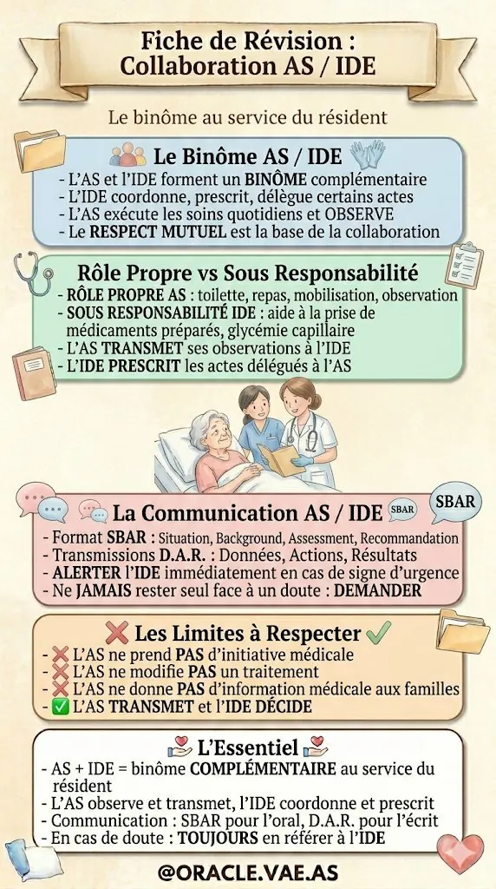

Le référentiel décodéChamp de compétence · Rôle propre · Les 5 blocs · Les 12 récits
La base de toute votre VAE DEAS. Comprendre exactement ce que fait un aide-soignant — et ce qu'il ne fait pas. Les règles, les pièges, les bonnes phrases pour le jury.
Objectifs & prérequisCe que vous saurez à l'issue des 2 heures
Comprendre le cadre légal
Distinguer R.4311-4 (champ AS) et R.4311-5 (rôle propre IDE). L'erreur-piège favorite du jury.
Identifier mes actes et limites
Savoir ce que l'AS fait, ne fait pas, et ce qu'il fait en collaboration avec l'IDE.
Prévenir le dépassement
Connaître les risques civil, pénal et disciplinaire et savoir refuser proprement.
Programme de la masterclass6 modules enchaînés — temps estimé par module
Le cadre légal
Articles R.4311-4 & 5, arrêté 28/03/2022, collaboration AS/IDE
Les 5 blocs & les 12 récits
Détail bloc par bloc, pièges, 27 domaines de savoir
Mes actes, mes limites
Fait / fait jamais / collaboration, 20 situations OUI-NON
Risques & protection
3 responsabilités, 3 critères éliminatoires, refuser proprement
Préparation oral jury
Composition jury, 3 temps, grille cotation, 3 piliers raisonnement
Synthèse & évaluation
15 points clés, 12 flashcards, quiz final 20 questions
Le cadre légal
Les articles qui définissent votre métier et les erreurs classiques en jury. Vous allez explorer la fiche ORACLE "Champ de compétence" section par section.
La fiche ORACLE du champ de compétenceCliquez sur chaque pastille dorée pour explorer la section

Fiche de révision ORACLE
Cette fiche condense le champ de compétence de l'AS en 8 blocs numérotés. C'est la matière de tout le Module 1.
Le jury pose souvent une question sur un de ces 8 blocs. Maîtrisez les 8, et vous êtes paré pour toute question sur le périmètre AS.
Article R.4311-4 — le champ de l'ASCode de la santé publique — la base de votre métier
champ d'intervention
de l'aide-soignant
Ce que dit l'article
Cet article pose le cadre : l'AS collabore aux soins infirmiers, exerce sous la responsabilité de l'infirmier, et peut réaliser certains actes de la vie quotidienne et de surveillance sous protocole.
Les 4 principes à retenir
- Collaboration — L'AS n'est pas sous les ordres directs du médecin. Il collabore à l'activité infirmière.
- Responsabilité IDE — L'AS exerce sous la responsabilité de l'IDE qui lui confie certains actes.
- Protocole — Chaque acte confié s'inscrit dans un protocole écrit du service.
- Formation — Certains actes (glycémie, aide à la prise de médicaments) nécessitent une habilitation.
Article R.4311-5 — le rôle propre de l'IDEPourquoi vous devez le connaître sans en revendiquer les actes
rôle propre
de l'infirmier
Ce qu'il faut comprendre
Cet article liste les actes que seul l'IDE peut réaliser en autonomie, sans prescription médicale. L'AS collabore à ces actes mais ne les porte pas en propre.
Les actes du rôle propre IDE auxquels l'AS collabore
- Soins d'hygiène et de confort — Toilette, change, installation : l'AS les réalise sous responsabilité IDE
- Prise de constantes — TA, FC, température, saturation : AS sur protocole, l'IDE analyse
- Surveillance et observation — AS observe, IDE interprète et décide
- Recueil de données — Glycémie capillaire, bandelette urinaire : AS si formé et habilité
- Participation aux soins — Positionnement, aide IDE pour soins techniques
L'arrêté du 28 mars 2022 et les textes récentsPourquoi votre DEAS a été entièrement rénové
Réforme du diplôme d'État AS
Nouvelle architecture : 5 blocs de compétences, 11 activités, 10 modules de formation. Fin du DEAS "ancien" qui comportait 8 modules.
Référentiel actuel DEAS 2022
C'est l'arrêté à citer en jury. Il fixe le référentiel d'activités et de compétences, précise les modalités VAE, et consolide l'architecture 5/11/12/18/27.
Loi de réforme de la VAE
Simplifie l'accès à la VAE : création du dispositif "France VAE", élargissement du droit, nouveau rôle de l'architecte accompagnateur de parcours.
Décret d'application VAE
Précise les règles pratiques de la nouvelle VAE : recevabilité en continu, parcours individualisé, nouvelle grille de cotation à 3 niveaux.
Obligations des accompagnateurs
Fixe les obligations des Architectes Accompagnateurs de Parcours (dont ORACLE VAE AS fait partie). Base légale de votre contrat.
La collaboration AS/IDE en pratiqueFiche ORACLE Collaboration — la zone grise, décodée

1️⃣ L'IDE confie, elle n'ordonne pas
Il n'existe pas de « lien hiérarchique » IDE→AS. L'IDE délègue ou confie un acte en précisant les modalités et le protocole.
2️⃣ L'AS peut refuser un acte
Si l'acte dépasse ses compétences, l'AS a le droit ET le devoir de refuser et de tracer. L'IDE n'est pas insultée : elle est protégée.
3️⃣ Toute collaboration se trace
Qui a confié ? Quand ? Sur quel protocole ? Si pas de trace, pas de collaboration — l'AS devient seul responsable.
« L'IDE me confie un acte sur protocole écrit. J'ai le droit et le devoir de refuser si je sens qu'il dépasse mes compétences — tracer ce refus me protège. »
Mini-quiz Module 1 — Le cadre légal5 questions pour valider le module
Les 5 blocs & les 12 récits
5 blocs, 11 activités, 12 récits, 18 éléments à produire, 27 domaines de savoir. Les pièges du bloc 4 (sortie patient) et du bloc 5 (inventaire activité 10).
Vue d'ensemble des 5 blocsCliquez sur un bloc pour voir ses activités et ses récits
Accompagnement dans les activités de la vie quotidienne et sociale
Au cœur du métier : accompagner la vie quotidienne, préserver l'autonomie
Activité 2 — Repérer les fragilités, prévenir et accompagner les risques.
Évaluation de l'état clinique et réalisation de soins adaptés
Le plus lourd — 13 des 27 domaines de savoir
Activité 4 — Mettre en œuvre les soins (hygiène, confort, aigus, fin de vie).
Activité 5 — Installer, mobiliser, aider aux déplacements. Appartient à BC2 clinique, pas BC1.
Information et accompagnement des personnes et des apprenants
Communication, formation des pairs, relation triangulaire
Activité 7 — Informer et former les pairs, stagiaires, nouveaux arrivants.
Entretien de l'environnement immédiat et des matériels
Attention : contexte SORTIE DE PATIENT exigé
Activité 9 — Repérer et signaler anomalies des locaux/matériels. Spécificité : compte DOUBLE (2 récits). Jamais le corps du patient.
Travail en équipe, traitement des informations, qualité et risques
Transmissions, inventaire — le volet transversal
Activité 11 — Participer organisation équipe et démarche qualité. Spécificité : compte DOUBLE (2 récits).
Bloc 1 — Vie quotidienne et sociale2 activités · 2 récits · le socle du métier AS
1Activité 1 — Vie quotidienne
Accompagner les actes essentiels du résident
- Toilette complète ou partielle
- Habillage, change
- Aide aux repas
- Accompagnement élimination
- Mobilisation et déplacements internes
- Communication quotidienne
2Activité 2 — Repérer et prévenir
Détecter les fragilités avant qu'elles s'aggravent
- Repérer : chutes, dénutrition, confusion
- Alerter l'IDE si signe d'alerte
- Mettre en place prévention (hydratation, mobilisation)
- Participer au PAP du résident
Bloc 2 — Évaluation clinique et soins adaptés3 activités · 3 récits · 13 des 27 domaines de savoir
3Activité 3 — Évaluer l'état clinique
- Prendre les constantes (TA, FC, T°)
- Évaluer la douleur (EVA, EN)
- Repérer les signes d'alerte
- Observer avec les 5 sens
4Activité 4 — Mettre en œuvre les soins
- Soins d'hygiène et confort
- Soins aigus (sur protocole)
- Soins palliatifs et fin de vie
- Soins post-mortem
5Activité 5 — Installer, mobiliser
- Positionnement (fauteuil, lit)
- Transferts avec aides techniques
- Prévention des escarres (changements 2-3h)
- Ergonomie / manutention
Bloc 3 — Information et accompagnement2 activités · 2 récits · communication avec résident, famille, équipe
6Activité 6 — Communiquer
Avec la personne et son entourage
- Écoute active, reformulation
- Communication adaptée (handicap sensoriel, démence)
- Relation triangulaire : résident / famille / équipe
- Gérer un refus de soins
- Annoncer une mauvaise nouvelle (en appui IDE)
7Activité 7 — Informer et former
Les pairs, stagiaires, nouveaux arrivants
- Accueillir un nouvel agent
- Encadrer un stagiaire AS
- Transmettre des gestes techniques
- Participer à l'évaluation du stagiaire
Bloc 4 — Entretien de l'environnement2 activités · 3 récits · piège SORTIE DE PATIENT
8Activité 8 — Entretenir locaux/matériel
- Bionettoyage selon protocole
- Désinfection matériel médical
- Gestion des DASRI
- Précautions standard et complémentaires
9Activité 9 — Signaler les anomalies
⚠ Compte DOUBLE — 2 récits à produire
- Dysfonctionnement d'un lève-personne
- Anomalie d'un lit médicalisé
- Alerte sur une chambre dégradée
- Problème de traçabilité matériel
🚨 PIÈGE N° 2 du Bloc 4 — L'activité 9 concerne UNIQUEMENT le matériel et les locaux. JAMAIS le corps du patient. Si vous écrivez « j'ai repéré une rougeur au sacrum » dans l'activité 9, c'est hors sujet — c'est l'activité 3.
Bloc 5 — Équipe, qualité, transmissions2 activités · 2 récits · activité 10 = INVENTAIRE
10Activité 10 — Transmettre
⚠ Spécificité : traitée par INVENTAIRE, pas par récit
- Transmissions DAR (Données, Actions, Résultats)
- Dossier de soins (papier ou informatisé)
- Transmissions orales (relève)
- Signalement d'un événement indésirable
11Activité 11 — Organiser équipe/qualité
⚠ Compte DOUBLE — 2 récits à produire
- Participer à une réunion d'équipe
- Rédiger un signalement d'EI
- Participer à un audit qualité
- Proposer une amélioration des pratiques
Au total : Bloc 5 = 2 récits (deux pour l'activité 11) + 1 inventaire (pour l'activité 10). Stéphane a eu raison deux fois contre les déductions automatiques le 29/09/2026.
Les 27 domaines de savoirRépartition par bloc — à consulter pour chaque récit
Bloc 1 5 domaines
- Accueil de la personne
- Activités en lieu de vie
- Toilette et change
- Aide à l'élimination
- Refus de soin
Bloc 2 13 domaines
- Aide au repas
- Fin de vie et deuil
- Risques et maltraitance
- Paramètres vitaux
- Évaluation de la douleur
- Médicaments
- Premiers secours (AFGSU2)
- Chirurgie pré/post-op
- Soin d'une plaie
- Dispositifs médicaux
- Prévention escarres
- Bas de contention
- Prélèvements non stériles
Bloc 3 3 domaines
- Soins non médicamenteux
- Soins post-mortem
- Manutention / Ergonomie
Bloc 4 3 domaines
- Communication résident/famille/équipe
- Formation et encadrement
- Entretien locaux et matériel
Bloc 5 3 domaines
- Transmissions
- Projet d'établissement et qualité
- Évaluation de sa pratique
Mes actes, mes limites
Ce que vous faites, ce que vous ne faites jamais, ce que vous faites en collaboration. 20 situations OUI/NON pour vous entraîner.
Ce que l'AS fait vs ce qu'il ne fait JAMAISLa question-piège favorite du jury
✓L'AS FAIT (en rôle propre ou collaboration)
- Soins d'hygiène et confort — toilette, change, habillage
- Aide à l'alimentation — surveillance déglutition, hydratation
- Mobilisation — transferts, aide à la marche, prévention chutes
- Mesure des paramètres vitaux selon protocole du service
- Observation et transmission — 5 sens, DAR, alerte IDE
- Aide à la prise de médicaments préparés par l'IDE si formé
- Retrait d'un pansement et pose d'un pansement sec, consigne IDE
- Participation à la démarche qualité et à la prévention
✕L'AS NE FAIT JAMAIS
- Aucune injection (sous-cutanée, IM, IV)
- Aucune perfusion (pose, débit, ablation)
- Aucun prélèvement sanguin ni ECBU stérile
- Aucune réfection de pansement complexe (acte IDE exclusif)
- Aucun sondage urinaire, aucune ablation de sonde ou drain
- Aucune distribution de médicaments non préparés par l'IDE
- Aucun diagnostic ni interprétation (rôle médecin/IDE)
- Aucune décision de contention — prescrite par le médecin
Les actes en COLLABORATION — la zone griseNi rôle propre AS, ni acte IDE exclusif
◆Actes réalisés en COLLABORATION avec l'IDE
- Distribution des médicaments préparés par l'IDE (si formé et habilité)
- Surveillance post-soin : T°, TA, pouls sur protocole écrit
- Recueil de données : glycémie capillaire, bandelette urinaire, poids
- Aide à l'IDE pour soins techniques (positionnement, maintien)
- Surveillance alimentation entérale (sans manipulation technique)
- Signaler tout effet secondaire ou anomalie observée
- Alimentation parentérale : SURVEILLER le débit, jamais régler
- Oxygénothérapie : SURVEILLER le patient, jamais régler le débit
!Les 3 règles de la collaboration
Le simple diplôme AS ne suffit pas. Il faut une formation spécifique (ex : glycémie capillaire) ET une habilitation écrite de votre employeur.
Chaque acte en collaboration s'inscrit dans un protocole du service, signé et daté. Jamais sur consigne orale isolée.
Qui a confié ? Quand ? Résultat ? À tracer dans le dossier de soins. Sans trace, l'AS est seul responsable.
Mon rôle au quotidien, en 8 engagementsFiche ORACLE Rôle Propre — ce que l'AS incarne auprès du résident

👁 L'observation est le cœur du rôle propre
L'AS est le professionnel le plus proche du résident. Observer avec les 5 sens pendant toilette et repas, détecter les changements, quantifier, transmettre en DAR.
🛡 La prévention est la mission fondamentale
Escarres (changement 2-3h), chutes (environnement sécurisé), déshydratation (proposer à boire), dénutrition, infections (hygiène des mains).
🤝 Faire AVEC, pas À LA PLACE
Maintenir l'autonomie du résident, respecter ses choix, habitudes, dignité. C'est la différence entre un soignant et un exécutant.
« L'observation que je transmets en DAR peut sauver des vies. C'est mon rôle propre : être là, voir, alerter. »
20 situations à cadrer — Je peux / je ne peux pasTestez-vous — chaque réponse est argumentée
Mini-quiz Module 3 — Mes actes5 questions pour valider le module
Risques & protection
Les 3 responsabilités, les 3 critères éliminatoires du jury, comment refuser proprement un acte hors champ.
Les 3 responsabilités en cas de dépassementTrois tribunaux, trois sanctions possibles — à connaître pour s'en protéger
Responsabilité pénale
Fautes graves : maltraitance, négligence, exercice illégal de la profession IDE.
Responsabilité civile
Obligation de réparer les dommages causés au résident ou à l'établissement.
Responsabilité disciplinaire
Sanctions de l'employeur : avertissement, mise à pied, licenciement.
Refuser un acte hors compétence est un DROIT et un DEVOIR
« Je ne fais pas cette injection, ce n'est pas dans mon rôle. Appelez l'IDE de garde. » — Cette phrase vous protège, protège votre résident, et protège votre carrière.
Les 3 critères éliminatoires du jury VAEUn seul suffit à faire tomber l'ensemble du Livret 2
Acte HORS CHAMP décrit comme réalisé
Si vous écrivez « j'ai fait une injection d'insuline », le jury élimine la totalité du dossier. Même en précisant que c'était en urgence. Même avec un IDE présent qui vous aurait dit « vas-y ».
Non-respect des protocoles d'hygiène
Pas de lavage de mains décrit avant un soin, oubli des précautions standard, matériel contaminé réutilisé : critère éliminatoire. Chaque situation doit démontrer votre maîtrise des précautions standard.
Mise en danger du patient
Soin réalisé sans surveillance adaptée, transfert sans aide technique quand elle était nécessaire, absence d'alerte sur un signe critique : critère éliminatoire. Le jury veut la preuve de votre vigilance.
Comment refuser proprement et se protégerLes 5 réflexes qui sauvent une carrière
1. REFUSER poliment
« Je ne peux pas faire cet acte, ce n'est pas dans mon rôle. »
2. ALERTER
Appeler l'IDE de garde, le cadre, le médecin d'astreinte.
3. TRACER
Dans le dossier : date, heure, acte refusé, raison, à qui alerté.
4. SURVEILLER
Continuer à surveiller le résident pendant qu'arrive l'IDE.
5. ASSURER
RC professionnelle recommandée : 50–120 €/an, à vie.
« Mon refus n'est jamais un abandon de poste. Je refuse l'acte hors champ, j'alerte, je trace, je reste au chevet. C'est la différence entre un professionnel et un exécutant. »
Préparation oral jury
Composition du jury VAE DEAS, 3 temps de l'entretien, grille de cotation officielle, 3 piliers du raisonnement clinique évalués.
Le jury VAE DEAS — composition et rôleQui vous jugera et sur quoi
👥Composition du jury
- Un président — Cadre de santé ou formateur en IFAS
- Deux professionnels AS — Aides-soignants en exercice, souvent avec expérience de tutorat
- Un formateur IFAS — Enseignant du diplôme DEAS actuel
- Parfois un employeur — Directeur d'EHPAD ou de service hospitalier
- Chaque jury est composé différemment selon la session
🎯Sur quoi s'appuie-t-il ?
- Votre Livret 2 renseigné — lecture critique avant l'entretien
- L'entretien avec vous — 45 min à 1h, questions précises
- Un manque d'informations, inexactitudes ou non-respect des bonnes pratiques diminue vos chances
- Les hésitations, lenteurs à répondre, incapacité à expliquer un geste diminuent aussi vos chances
⚡Les 3 points d'attention du jury
- Votre parcours — Diversité des expériences, continuité, cohérence
- La nature et la diversité de l'expérience — Avez-vous travaillé en EHPAD, en service de soins, à domicile ? Les contextes variés rassurent.
- La nature des activités réalisées — Les 11 activités du référentiel sont-elles réellement couvertes par votre expérience ?
Les 3 temps de l'entretien juryDéroulé précis pour ne pas être surpris
Avant votre entrée
- Hors de votre présence, les jurés débattent
- Lecture critique de votre Livret 2
- Repérage des points forts et des points faibles
- Choix des compétences à faire creuser à l'entretien
- Préparation des questions-piège
L'entretien
- Présentation de votre parcours (5 min)
- Questions sur chaque activité en difficulté
- Questions sur le raisonnement clinique
- Mises en situation : « que feriez-vous si… »
- Zéro connaissance pure demandée — c'est VOTRE expérience
La délibération
- Hors de votre présence
- Le jury se prononce bloc par bloc
- Décision collégiale et souveraine
- Préconisations si bloc non validé (stage, formation)
- Décision notifiée par courrier dans les 15 jours
La grille de cotation à 3 niveauxComment le jury évalue chaque compétence
La compétence est démontrée dans le Livret 2 et confirmée à l'entretien. Les gestes sont justes, le raisonnement clinique est présent, les protocoles sont respectés.
La compétence est partielle ou ambiguë dans le Livret 2. Le jury l'approfondit à l'entretien. Doit être levée en acquis ou non acquis après questions.
La compétence n'est pas démontrée ni dans le Livret 2 ni à l'entretien. Si la majorité des compétences du bloc est non acquise, le bloc est non validé.
Les 3 piliers du raisonnement cliniqueCe que le jury cherche vraiment derrière vos gestes
POURQUOI ?
Vous devez relier chaque acte à l'état clinique du résident, à son PAP, à un signe d'alerte. Le geste n'est jamais une routine : il répond à un besoin identifié.
COMMENT ?
L'adaptation est la preuve de votre expertise. Le même geste réalisé différemment selon le résident, le contexte, les habitudes de vie. L'inverse de la routine mécanique.
ET APRÈS ?
Le rôle AS ne s'arrête pas au geste. L'observation, la transmission DAR, l'alerte, l'ajustement du PAP sont le prolongement obligatoire. Sans cette boucle, le geste n'est pas « soignant ».
Les 15 points clés à retenirCochez chaque point que vous maîtrisez — la liste de garantie avant jury
Je travaille sous la responsabilité de l'infirmier, pas sous ses ordres directs
Je n'ai pas de rôle propre — je collabore au rôle propre infirmier (art. R.4311-5)
Mon référentiel actuel = arrêté du 28 mars 2022, DEAS Niveau 4 CNCP
Je connais les 5 blocs · 11 activités · 12 récits · 18 éléments · 27 domaines
Je sais que l'activité 10 = inventaire, les activités 9 et 11 doublent
Je sais que l'activité 5 appartient au Bloc 2 clinique (pas Bloc 1)
Je sais que l'activité 8 réclame un contexte SORTIE DE PATIENT
Je sais que l'activité 9 ne concerne JAMAIS le corps du patient
Je sais ce que je fais, ce que je ne fais JAMAIS, et ce que je fais en collaboration
Je respecte les protocoles et les prescriptions écrites — jamais sur consigne orale
J'observe avec mes 5 sens, je transmets en DAR, j'alerte en cas de doute
Je contribue au PAP et je respecte les choix du résident (faire AVEC)
Je connais les 3 responsabilités et les 3 critères éliminatoires du jury
Je sais refuser proprement (polis, alerter, tracer, surveiller, assurer)
Pour chaque récit, j'applique les 3 piliers : POURQUOI, COMMENT, ET APRÈS
12 flashcards à mémoriserCliquez sur la carte pour retourner. Utilisez les flèches ou les boutons.
Quiz final — 20 questionsValidez vos acquis sur l'ensemble du référentiel décodé
Masterclass 01 terminéeVous connaissez votre champ de compétence
Vous savez maintenant ce qu'est votre rôle propre, les 5 blocs, les 12 récits à produire, les 27 domaines de savoir, les 3 responsabilités et les 3 critères éliminatoires du jury.
Prochaine étape : transformer tout cela en situation professionnelle écrite qui prouve au jury que vous êtes AS.